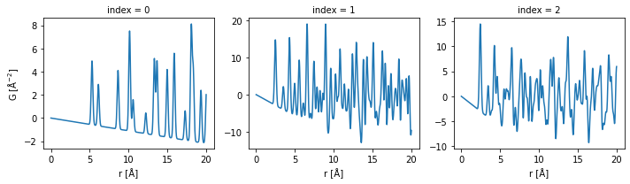
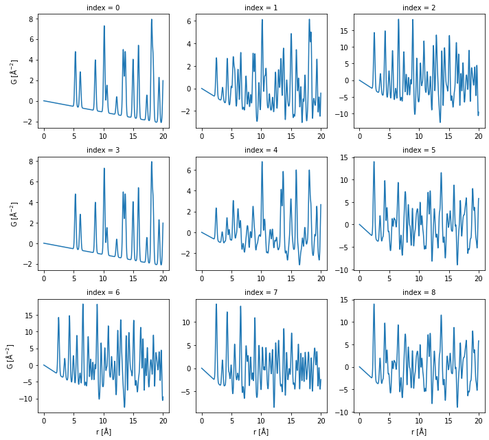
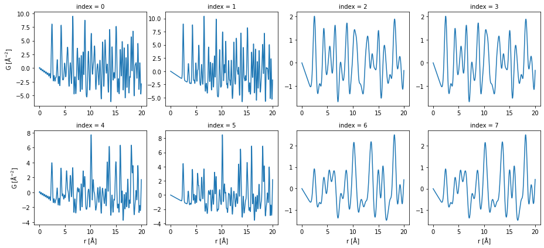

<!DOCTYPE html>
<html class="writer-html5" lang="en" >
<head>
  <meta charset="utf-8" />
  
  <meta name="viewport" content="width=device-width, initial-scale=1.0" />
  
  <title>Usage of the CLI &mdash; PDFmix 0.post1+g3d44a29 documentation</title>
  

  
  <link rel="stylesheet" href="_static/css/theme.css" type="text/css" />
  <link rel="stylesheet" href="_static/pygments.css" type="text/css" />
  <link rel="stylesheet" href="_static/pygments.css" type="text/css" />
  <link rel="stylesheet" href="_static/css/theme.css" type="text/css" />
  <link rel="stylesheet" href="_static/plot_directive.css" type="text/css" />
  <link rel="stylesheet" href="_static/copybutton.css" type="text/css" />

  
  

  
  

  

  
  <!--[if lt IE 9]>
    <script src="_static/js/html5shiv.min.js"></script>
  <![endif]-->
  
    
      <script type="text/javascript" id="documentation_options" data-url_root="./" src="_static/documentation_options.js"></script>
        <script data-url_root="./" id="documentation_options" src="_static/documentation_options.js"></script>
        <script src="_static/jquery.js"></script>
        <script src="_static/underscore.js"></script>
        <script src="_static/doctools.js"></script>
        <script src="_static/clipboard.min.js"></script>
        <script src="_static/copybutton.js"></script>
        <script async="async" src="https://cdn.jsdelivr.net/npm/mathjax@3/es5/tex-mml-chtml.js"></script>
    
    <script type="text/javascript" src="_static/js/theme.js"></script>

    
    <link rel="index" title="Index" href="genindex.html" />
    <link rel="search" title="Search" href="search.html" />
    <link rel="next" title="Minimum Version of Python and NumPy" href="min_versions.html" />
    <link rel="prev" title="Installation" href="installation.html" /> 
</head>

<body class="wy-body-for-nav">

   
  <div class="wy-grid-for-nav">
    
    <nav data-toggle="wy-nav-shift" class="wy-nav-side">
      <div class="wy-side-scroll">
        <div class="wy-side-nav-search" >
          

          
            <a href="index.html" class="icon icon-home"> PDFmix
          

          
          </a>

          
            
            
              <div class="version">
                0.post1+g3d44a29
              </div>
            
          

          
<div role="search">
  <form id="rtd-search-form" class="wy-form" action="search.html" method="get">
    <input type="text" name="q" placeholder="Search docs" />
    <input type="hidden" name="check_keywords" value="yes" />
    <input type="hidden" name="area" value="default" />
  </form>
</div>

          
        </div>

        
        <div class="wy-menu wy-menu-vertical" data-spy="affix" role="navigation" aria-label="main navigation">
          
            
            
              
            
            
              <ul class="current">
<li class="toctree-l1"><a class="reference internal" href="installation.html">Installation</a></li>
<li class="toctree-l1 current"><a class="current reference internal" href="#">Usage of the CLI</a><ul>
<li class="toctree-l2"><a class="reference internal" href="#introduction">Introduction</a><ul>
<li class="toctree-l3"><a class="reference internal" href="#simulation-of-mixture-pdfs">Simulation of mixture PDFs</a></li>
<li class="toctree-l3"><a class="reference internal" href="#input-and-output-files">Input and output files</a></li>
<li class="toctree-l3"><a class="reference internal" href="#configuration">Configuration</a></li>
<li class="toctree-l3"><a class="reference internal" href="#help">Help</a></li>
</ul>
</li>
<li class="toctree-l2"><a class="reference internal" href="#use-case-create-single-phase-pdfs">Use case: create single phase PDFs</a></li>
<li class="toctree-l2"><a class="reference internal" href="#use-case-create-the-mixture-pdfs">Use case: create the mixture PDFs</a></li>
<li class="toctree-l2"><a class="reference internal" href="#use-case-create-mixture-pdfs-using-different-parameters">Use case: create mixture PDFs using different parameters</a></li>
<li class="toctree-l2"><a class="reference internal" href="#use-case-use-configuration-file">Use case: use configuration file</a></li>
</ul>
</li>
<li class="toctree-l1"><a class="reference internal" href="min_versions.html">Minimum Version of Python and NumPy</a></li>
</ul>

            
          
        </div>
        
      </div>
    </nav>

    <section data-toggle="wy-nav-shift" class="wy-nav-content-wrap">

      
      <nav class="wy-nav-top" aria-label="top navigation">
        
          <i data-toggle="wy-nav-top" class="fa fa-bars"></i>
          <a href="index.html">PDFmix</a>
        
      </nav>


      <div class="wy-nav-content">
        
        <div class="rst-content">
        
          


<div role="navigation" aria-label="breadcrumbs navigation">

  <ul class="wy-breadcrumbs">
    
      <li><a href="index.html" class="icon icon-home"></a> &raquo;</li>
        
      <li>Usage of the CLI</li>
    
    
      <li class="wy-breadcrumbs-aside">
        
          
            <a href="_sources/usage_cli.rst.txt" rel="nofollow"> View page source</a>
          
        
      </li>
    
  </ul>

  
  <hr/>
</div>
          <div role="main" class="document" itemscope="itemscope" itemtype="http://schema.org/Article">
           <div itemprop="articleBody">
            
  <div class="section" id="usage-of-the-cli">
<h1>Usage of the CLI<a class="headerlink" href="#usage-of-the-cli" title="Permalink to this headline">¶</a></h1>
<div class="section" id="introduction">
<h2>Introduction<a class="headerlink" href="#introduction" title="Permalink to this headline">¶</a></h2>
<div class="section" id="simulation-of-mixture-pdfs">
<h3>Simulation of mixture PDFs<a class="headerlink" href="#simulation-of-mixture-pdfs" title="Permalink to this headline">¶</a></h3>
<p>The core functionality of the CLI is to generate a folder of PDF data
files from a folder of CIF files. The PDFs are the linear combination of
PDFs calculated from individual CIF files. The coefficients are
calculated according to the molar fractions provided by the user. The
calculation is done in a four layer loop: for each combination of the
CIF files, for each set of the molar fractions, for each set of
calculation settings, for each set of structure parameter settings, a
PDF will be calculated. This PDF is a simulated PDF of the mixture of
phases at certain condition. If the combination only contains one file,
then this PDF is a simulated PDF from a single phase.</p>
</div>
<div class="section" id="input-and-output-files">
<h3>Input and output files<a class="headerlink" href="#input-and-output-files" title="Permalink to this headline">¶</a></h3>
<p>The input files should all be in one folder. They should be in CIF
format. Below is an example of the files that we will use. Here, the
<code class="docutils literal notranslate"><span class="pre">!</span></code> means this line runs in a bash shell.</p>
<div class="highlight-ipython3 notranslate"><div class="highlight"><pre><span></span><span class="o">!</span> ls <span class="s2">&quot;./cifs&quot;</span>
</pre></div>
</div>
<div class="highlight-default notranslate"><div class="highlight"><pre><span></span><span class="n">Cs</span><span class="o">.</span><span class="n">cif</span> <span class="n">Fe</span><span class="o">.</span><span class="n">cif</span> <span class="n">Ni</span><span class="o">.</span><span class="n">cif</span>
</pre></div>
</div>
<p>The output files will be in one folder specified by the user. They are
NETCDF files. Theses files can be read by
<a class="reference external" href="http://xarray.pydata.org/en/stable/">xarray</a> module. They contain
the PDF data and the settings used to calculate the PDF.</p>
</div>
<div class="section" id="configuration">
<h3>Configuration<a class="headerlink" href="#configuration" title="Permalink to this headline">¶</a></h3>
<p>The fractions to use, the calculation settings and the structure
settings are the key configuration for the simulation. The configuration
is defined in key values pairs, where each key a parameter and each
value is a list of numbers. Because it is assumed multiple values will
be used in the calculation, the numbers for one parameter are stored in
a list. Below shows the default configuration of the calculation. In
default, one “mixture” contains one phase (one CIF file) so it is a
single phase PDF calculation.</p>
<div class="highlight-ipython3 notranslate"><div class="highlight"><pre><span></span><span class="o">!</span> pdfmix show
</pre></div>
</div>
<div class="highlight-default notranslate"><div class="highlight"><pre><span></span><span class="p">{</span><span class="s1">&#39;delta1&#39;</span><span class="p">:</span> <span class="p">[</span><span class="mf">0.0</span><span class="p">],</span>
 <span class="s1">&#39;delta2&#39;</span><span class="p">:</span> <span class="p">[</span><span class="mf">0.0</span><span class="p">],</span>
 <span class="s1">&#39;fracs&#39;</span><span class="p">:</span> <span class="p">[[</span><span class="mf">1.0</span><span class="p">]],</span>
 <span class="s1">&#39;ftype&#39;</span><span class="p">:</span> <span class="s1">&#39;molar&#39;</span><span class="p">,</span>
 <span class="s1">&#39;iso_adp&#39;</span><span class="p">:</span> <span class="p">[</span><span class="mf">0.5</span><span class="p">],</span>
 <span class="s1">&#39;lat_scale&#39;</span><span class="p">:</span> <span class="p">[</span><span class="mf">1.0</span><span class="p">],</span>
 <span class="s1">&#39;qbroad&#39;</span><span class="p">:</span> <span class="p">[</span><span class="mf">0.0</span><span class="p">],</span>
 <span class="s1">&#39;qdamp&#39;</span><span class="p">:</span> <span class="p">[</span><span class="mf">0.0</span><span class="p">],</span>
 <span class="s1">&#39;qmax&#39;</span><span class="p">:</span> <span class="p">[</span><span class="mf">0.0</span><span class="p">],</span>
 <span class="s1">&#39;qmin&#39;</span><span class="p">:</span> <span class="p">[</span><span class="mf">0.0</span><span class="p">],</span>
 <span class="s1">&#39;rmax&#39;</span><span class="p">:</span> <span class="p">[</span><span class="mf">20.0</span><span class="p">],</span>
 <span class="s1">&#39;rmin&#39;</span><span class="p">:</span> <span class="p">[</span><span class="mf">0.0</span><span class="p">],</span>
 <span class="s1">&#39;rstep&#39;</span><span class="p">:</span> <span class="p">[</span><span class="mf">0.01</span><span class="p">],</span>
 <span class="s1">&#39;verbose&#39;</span><span class="p">:</span> <span class="mi">1</span><span class="p">}</span>
</pre></div>
</div>
</div>
<div class="section" id="help">
<h3>Help<a class="headerlink" href="#help" title="Permalink to this headline">¶</a></h3>
<p>To know the syntax of the CLI, simple run the command below.</p>
<div class="highlight-ipython3 notranslate"><div class="highlight"><pre><span></span><span class="o">!</span> pdfmix create -- --help
</pre></div>
</div>
<div class="highlight-default notranslate"><div class="highlight"><pre><span></span>NAME
    pdfmix create - Create mixture PDFs using a collection of crystal structures.

SYNOPSIS
    pdfmix create OUTPUT_DIRECTORY &lt;flags&gt;

DESCRIPTION
    The core functionality of the CLI is to generate a folder of PDF data files from a folder of CIF files.
    The PDFs are the linear combination of PDFs calculated from individual CIF files. The coefficients are
    calculated according to the molar fractions provided by the user. The calculation is done in a four layer
    loop: for each combination of the CIF files, for each set of the molar fractions, for each set of
    calculation settings, for each set of structure parameter settings, a PDF will be calculated. This PDF is a
    simulated PDF of the mixture of phases at certain condition. If the combination only contains one file,
    then this PDF is a simulated PDF from a single phase. The input files should all be in one folder. They
    should be in CIF format. The output files will be in one folder specified by the user. They are NETCDF files.
    The fractions to use, the calculation settings and the structure settings are the key configuration for the
    simulation. The configuration is defined in key values pairs, where each key a parameter and each value is a
    list of numbers. Because it is assumed multiple values will be used in the calculation, the numbers for one
    parameter are stored in a list. Below shows the default configuration of the calculation. In default, one
    &quot;mixture&quot; contains one phase (one CIF file) so it is a single phase PDF calculation.

POSITIONAL ARGUMENTS
    OUTPUT_DIRECTORY
        The output directory location.

FLAGS
    --input_directory=INPUT_DIRECTORY
        The input directory location, default &quot;./&quot;.
    --config_file=CONFIG_FILE
        The configuration yaml file location, if None, don&#39;t use it, default None.
    --output_pattern=OUTPUT_PATTERN
        The output file name pattern in the python format string style, default r&quot;{:d}.nc&quot;.
    --input_pattern=INPUT_PATTERN
        The input file name pattern in the glob pattern style, used in searching, default r&quot;[!.]*.cif&quot;.
    Additional flags are accepted.
        The configuration to update.

NOTES
    You can also use flags syntax for POSITIONAL ARGUMENTS
</pre></div>
</div>
</div>
</div>
<div class="section" id="use-case-create-single-phase-pdfs">
<h2>Use case: create single phase PDFs<a class="headerlink" href="#use-case-create-single-phase-pdfs" title="Permalink to this headline">¶</a></h2>
<p>We use the same data folder for all the use cases demonstrate here.</p>
<div class="highlight-ipython3 notranslate"><div class="highlight"><pre><span></span><span class="o">!</span> ls <span class="s2">&quot;./cifs&quot;</span>
</pre></div>
</div>
<div class="highlight-default notranslate"><div class="highlight"><pre><span></span><span class="n">Cs</span><span class="o">.</span><span class="n">cif</span> <span class="n">Fe</span><span class="o">.</span><span class="n">cif</span> <span class="n">Ni</span><span class="o">.</span><span class="n">cif</span>
</pre></div>
</div>
<p>The line below shows how to calculate PDFs from a folder “./cifs” of CIF
files using the default configuration and save the results in the
“./pdfs1” folder.</p>
<div class="highlight-ipython3 notranslate"><div class="highlight"><pre><span></span><span class="o">!</span> pdfmix create <span class="s2">&quot;./pdfs1&quot;</span> <span class="s2">&quot;./cifs&quot;</span>
</pre></div>
</div>
<div class="highlight-default notranslate"><div class="highlight"><pre><span></span>Find 3 files in the input directory. Choose 1 files to create a mixture phase. For each mixture, there are 1 sets of fractions, 1 structure parameter sets, 1 calculation parameter sets. In total, there are 3 PDFs to calculate.
Progress: 100%|███████████████████████████████████| 3/3 [00:00&lt;00:00,  3.49it/s]
</pre></div>
</div>
<p>The line below lists the generated PDF data files. There are three
files, corresponding to the PDFs from “Cs.cif”, “Fe.cif”, “Ni.cif”.</p>
<div class="highlight-ipython3 notranslate"><div class="highlight"><pre><span></span><span class="o">!</span> ls <span class="s2">&quot;./pdfs1&quot;</span>
</pre></div>
</div>
<div class="highlight-default notranslate"><div class="highlight"><pre><span></span><span class="mf">0.</span><span class="n">nc</span> <span class="mf">1.</span><span class="n">nc</span> <span class="mf">2.</span><span class="n">nc</span>
</pre></div>
</div>
<p>In python, we load the one PDF data file and show what are inside the
<a class="reference external" href="http://xarray.pydata.org/en/stable/generated/xarray.Dataset.html">xarray.Dataset</a>.</p>
<div class="highlight-ipython3 notranslate"><div class="highlight"><pre><span></span><span class="kn">import</span> <span class="nn">xarray</span> <span class="k">as</span> <span class="nn">xr</span>

<span class="n">ds0</span> <span class="o">=</span> <span class="n">xr</span><span class="o">.</span><span class="n">load_dataset</span><span class="p">(</span><span class="s2">&quot;./pdfs1/0.nc&quot;</span><span class="p">)</span>
<span class="nb">print</span><span class="p">(</span><span class="n">ds0</span><span class="p">)</span>
</pre></div>
</div>
<pre class="literal-block">&lt;xarray.Dataset&gt;
Dimensions:    (phase: 1, r: 2000)
Coordinates:
  * r          (r) float64 0.0 0.01 0.02 0.03 0.04 ... 19.96 19.97 19.98 19.99
  * phase      (phase) int32 0
Data variables:
    G          (r) float64 0.0 -0.001102 -0.002204 ... 1.565 1.769 1.957
    structure  (phase) object &quot;# generated using pymatgenndata_Csn_symmetry...
    fname      (phase) object 'Cs'
    fraction   (phase) float64 1.0
    iso_adp    float64 0.5
    lat_scale  float64 1.0
    rmin       float64 0.0
    rmax       float64 20.0
    rstep      float64 0.01
    qmin       float64 0.0
    qmax       float64 0.0
    qdamp      float64 0.0
    qbroad     float64 0.0
    delta1     float64 0.0
    delta2     float64 0.0</pre>
<p>We visualize the PDF data here.</p>
<div class="highlight-ipython3 notranslate"><div class="highlight"><pre><span></span><span class="n">ds</span> <span class="o">=</span> <span class="n">xr</span><span class="o">.</span><span class="n">concat</span><span class="p">(</span>
    <span class="p">[</span><span class="n">xr</span><span class="o">.</span><span class="n">load_dataset</span><span class="p">(</span><span class="s2">&quot;./pdfs1/</span><span class="si">{}</span><span class="s2">.nc&quot;</span><span class="o">.</span><span class="n">format</span><span class="p">(</span><span class="n">i</span><span class="p">))</span> <span class="k">for</span> <span class="n">i</span> <span class="ow">in</span> <span class="nb">range</span><span class="p">(</span><span class="mi">3</span><span class="p">)],</span>
    <span class="n">dim</span><span class="o">=</span><span class="s2">&quot;index&quot;</span>
<span class="p">)</span>
<span class="n">ds</span><span class="p">[</span><span class="s2">&quot;G&quot;</span><span class="p">]</span><span class="o">.</span><span class="n">plot</span><span class="p">(</span><span class="n">col</span><span class="o">=</span><span class="s2">&quot;index&quot;</span><span class="p">,</span> <span class="n">sharex</span><span class="o">=</span><span class="kc">False</span><span class="p">,</span> <span class="n">sharey</span><span class="o">=</span><span class="kc">False</span><span class="p">);</span>
</pre></div>
</div>

</div>
<div class="section" id="use-case-create-the-mixture-pdfs">
<h2>Use case: create the mixture PDFs<a class="headerlink" href="#use-case-create-the-mixture-pdfs" title="Permalink to this headline">¶</a></h2>
<p>We will use the same folder as the input.</p>
<div class="highlight-ipython3 notranslate"><div class="highlight"><pre><span></span><span class="o">!</span> ls <span class="s2">&quot;./cifs&quot;</span>
</pre></div>
</div>
<div class="highlight-default notranslate"><div class="highlight"><pre><span></span><span class="n">Cs</span><span class="o">.</span><span class="n">cif</span> <span class="n">Fe</span><span class="o">.</span><span class="n">cif</span> <span class="n">Ni</span><span class="o">.</span><span class="n">cif</span>
</pre></div>
</div>
<p>This time, we will give the parameters for the molar fractions of two
phases. There are three different sets of fractions, where each set
contains two parameters. At each time, we will choose two cif files as
the two phases. In this example, the combinations are “Cs + Fe”, “Cs +
Ni” and “Fe + Ni”. For each combination, we will set the fractions of
phases to be “1:0”, “0.5:0.5” and “0:1” once a time and calculate the
PDF. Then, there should be 9 PDF calculated in total.</p>
<div class="highlight-ipython3 notranslate"><div class="highlight"><pre><span></span><span class="o">!</span> pdfmix create <span class="s2">&quot;./pdfs2&quot;</span> <span class="s2">&quot;./cifs&quot;</span> --fracs<span class="o">=</span><span class="s2">&quot;[[1.0, 0.0],[0.5,0.5],[0.0,1.0]]&quot;</span>
</pre></div>
</div>
<div class="highlight-default notranslate"><div class="highlight"><pre><span></span>Find 3 files in the input directory. Choose 2 files to create a mixture phase. For each mixture, there are 3 sets of fractions, 1 structure parameter sets, 1 calculation parameter sets. In total, there are 9 PDFs to calculate.
Progress: 100%|███████████████████████████████████| 9/9 [00:02&lt;00:00,  4.26it/s]
</pre></div>
</div>
<p>Here, we show the PDFs. Each row is a combination of phase and each
column is a set of molar fractions.</p>
<div class="highlight-ipython3 notranslate"><div class="highlight"><pre><span></span><span class="n">ds</span> <span class="o">=</span> <span class="n">xr</span><span class="o">.</span><span class="n">concat</span><span class="p">(</span>
    <span class="p">[</span><span class="n">xr</span><span class="o">.</span><span class="n">load_dataset</span><span class="p">(</span><span class="s2">&quot;./pdfs2/</span><span class="si">{}</span><span class="s2">.nc&quot;</span><span class="o">.</span><span class="n">format</span><span class="p">(</span><span class="n">i</span><span class="p">))</span> <span class="k">for</span> <span class="n">i</span> <span class="ow">in</span> <span class="nb">range</span><span class="p">(</span><span class="mi">9</span><span class="p">)],</span>
    <span class="n">dim</span><span class="o">=</span><span class="s2">&quot;index&quot;</span>
<span class="p">)</span>
<span class="n">ds</span><span class="p">[</span><span class="s2">&quot;G&quot;</span><span class="p">]</span><span class="o">.</span><span class="n">plot</span><span class="p">(</span><span class="n">col</span><span class="o">=</span><span class="s2">&quot;index&quot;</span><span class="p">,</span> <span class="n">sharex</span><span class="o">=</span><span class="kc">False</span><span class="p">,</span> <span class="n">sharey</span><span class="o">=</span><span class="kc">False</span><span class="p">,</span> <span class="n">col_wrap</span><span class="o">=</span><span class="mi">3</span><span class="p">);</span>
</pre></div>
</div>

</div>
<div class="section" id="use-case-create-mixture-pdfs-using-different-parameters">
<h2>Use case: create mixture PDFs using different parameters<a class="headerlink" href="#use-case-create-mixture-pdfs-using-different-parameters" title="Permalink to this headline">¶</a></h2>
<p>We still use the same folder as the input.</p>
<div class="highlight-ipython3 notranslate"><div class="highlight"><pre><span></span><span class="o">!</span> ls <span class="s2">&quot;./cifs&quot;</span>
</pre></div>
</div>
<div class="highlight-default notranslate"><div class="highlight"><pre><span></span><span class="n">Cs</span><span class="o">.</span><span class="n">cif</span> <span class="n">Fe</span><span class="o">.</span><span class="n">cif</span> <span class="n">Ni</span><span class="o">.</span><span class="n">cif</span>
</pre></div>
</div>
<p>This time, we calculate the mixture of all three phases using two
different sets of molar fractions and for each set, we will use
different “is_adp” and “qmax”. There are two “iso_adp” and two “qmax” to
use. In total, we will have 2 <span class="math notranslate nohighlight">\(\times\)</span> 2 <span class="math notranslate nohighlight">\(\times\)</span> 2 = 8
PDFs.</p>
<div class="highlight-ipython3 notranslate"><div class="highlight"><pre><span></span><span class="o">!</span> pdfmix create <span class="s2">&quot;./pdfs3&quot;</span> <span class="s2">&quot;./cifs&quot;</span> --fracs<span class="o">=</span><span class="s2">&quot;[[0.2,0.6,0.2],[0.4,0.2,0.4]]&quot;</span> --iso_adp<span class="o">=</span><span class="s2">&quot;[0.4,1.6]&quot;</span> --qmax<span class="o">=</span><span class="s2">&quot;[20.0,40.0]&quot;</span>
</pre></div>
</div>
<div class="highlight-default notranslate"><div class="highlight"><pre><span></span>Find 3 files in the input directory. Choose 3 files to create a mixture phase. For each mixture, there are 2 sets of fractions, 2 structure parameter sets, 2 calculation parameter sets. In total, there are 8 PDFs to calculate.
Progress: 100%|███████████████████████████████████| 8/8 [00:05&lt;00:00,  1.55it/s]
</pre></div>
</div>
<p>Here, we show the PDFs. One row is the a combination of molar fractions.
Each column is a combination of the “iso_adp” and “qmax” parameters.</p>
<div class="highlight-ipython3 notranslate"><div class="highlight"><pre><span></span><span class="n">ds</span> <span class="o">=</span> <span class="n">xr</span><span class="o">.</span><span class="n">concat</span><span class="p">(</span>
    <span class="p">[</span><span class="n">xr</span><span class="o">.</span><span class="n">load_dataset</span><span class="p">(</span><span class="s2">&quot;./pdfs3/</span><span class="si">{}</span><span class="s2">.nc&quot;</span><span class="o">.</span><span class="n">format</span><span class="p">(</span><span class="n">i</span><span class="p">))</span> <span class="k">for</span> <span class="n">i</span> <span class="ow">in</span> <span class="nb">range</span><span class="p">(</span><span class="mi">8</span><span class="p">)],</span>
    <span class="n">dim</span><span class="o">=</span><span class="s2">&quot;index&quot;</span>
<span class="p">)</span>
<span class="n">ds</span><span class="p">[</span><span class="s2">&quot;G&quot;</span><span class="p">]</span><span class="o">.</span><span class="n">plot</span><span class="p">(</span><span class="n">col</span><span class="o">=</span><span class="s2">&quot;index&quot;</span><span class="p">,</span> <span class="n">col_wrap</span><span class="o">=</span><span class="mi">4</span><span class="p">,</span> <span class="n">sharex</span><span class="o">=</span><span class="kc">False</span><span class="p">,</span> <span class="n">sharey</span><span class="o">=</span><span class="kc">False</span><span class="p">);</span>
</pre></div>
</div>

</div>
<div class="section" id="use-case-use-configuration-file">
<h2>Use case: use configuration file<a class="headerlink" href="#use-case-use-configuration-file" title="Permalink to this headline">¶</a></h2>
<p>If there are a long list of the parameters, it will be inconvenient to
type the arguments. We can dump the parameters in a YAML file and use
the file as the configuration interface. To get one file to start, we
run the command below. A file of default configuration will be
generated.</p>
<div class="highlight-ipython3 notranslate"><div class="highlight"><pre><span></span><span class="o">!</span> pdfmix write <span class="s2">&quot;pdfmix.yaml&quot;</span>
</pre></div>
</div>
<p>Here we show what are in this file. We can add or delete the values
inside to create our own configuration.</p>
<div class="highlight-ipython3 notranslate"><div class="highlight"><pre><span></span><span class="o">!</span> cat <span class="s2">&quot;pdfmix.yaml&quot;</span>
</pre></div>
</div>
<div class="highlight-default notranslate"><div class="highlight"><pre><span></span><span class="n">verbose</span><span class="p">:</span> <span class="mi">1</span>
<span class="n">fracs</span><span class="p">:</span>
<span class="o">-</span> <span class="o">-</span> <span class="mf">1.0</span>
<span class="n">ftype</span><span class="p">:</span> <span class="n">molar</span>
<span class="n">iso_adp</span><span class="p">:</span>
<span class="o">-</span> <span class="mf">0.5</span>
<span class="n">lat_scale</span><span class="p">:</span>
<span class="o">-</span> <span class="mf">1.0</span>
<span class="n">rmin</span><span class="p">:</span>
<span class="o">-</span> <span class="mf">0.0</span>
<span class="n">rmax</span><span class="p">:</span>
<span class="o">-</span> <span class="mf">20.0</span>
<span class="n">rstep</span><span class="p">:</span>
<span class="o">-</span> <span class="mf">0.01</span>
<span class="n">qmin</span><span class="p">:</span>
<span class="o">-</span> <span class="mf">0.0</span>
<span class="n">qmax</span><span class="p">:</span>
<span class="o">-</span> <span class="mf">0.0</span>
<span class="n">qdamp</span><span class="p">:</span>
<span class="o">-</span> <span class="mf">0.0</span>
<span class="n">qbroad</span><span class="p">:</span>
<span class="o">-</span> <span class="mf">0.0</span>
<span class="n">delta1</span><span class="p">:</span>
<span class="o">-</span> <span class="mf">0.0</span>
<span class="n">delta2</span><span class="p">:</span>
<span class="o">-</span> <span class="mf">0.0</span>
</pre></div>
</div>
<p>We provide the path to the YAML file in the argument and run the
command. Here, in this example, we didn’t change any parameters.</p>
<div class="highlight-ipython3 notranslate"><div class="highlight"><pre><span></span><span class="o">!</span> pdfmix create <span class="s2">&quot;./pdfs4&quot;</span> <span class="s2">&quot;./cifs&quot;</span> --config_file<span class="o">=</span><span class="s2">&quot;./pdfmix.yaml&quot;</span>
</pre></div>
</div>
<div class="highlight-default notranslate"><div class="highlight"><pre><span></span>Find 3 files in the input directory. Choose 1 files to create a mixture phase. For each mixture, there are 1 sets of fractions, 1 structure parameter sets, 1 calculation parameter sets. In total, there are 3 PDFs to calculate.
Progress: 100%|███████████████████████████████████| 3/3 [00:00&lt;00:00,  6.80it/s]
</pre></div>
</div>
<p>As we expect, the results are the same as the first run we made in the
first use case.</p>
<div class="highlight-ipython3 notranslate"><div class="highlight"><pre><span></span><span class="n">ds</span> <span class="o">=</span> <span class="n">xr</span><span class="o">.</span><span class="n">concat</span><span class="p">(</span>
    <span class="p">[</span><span class="n">xr</span><span class="o">.</span><span class="n">load_dataset</span><span class="p">(</span><span class="s2">&quot;./pdfs4/</span><span class="si">{}</span><span class="s2">.nc&quot;</span><span class="o">.</span><span class="n">format</span><span class="p">(</span><span class="n">i</span><span class="p">))</span> <span class="k">for</span> <span class="n">i</span> <span class="ow">in</span> <span class="nb">range</span><span class="p">(</span><span class="mi">3</span><span class="p">)],</span>
    <span class="n">dim</span><span class="o">=</span><span class="s2">&quot;index&quot;</span>
<span class="p">)</span>
<span class="n">ds</span><span class="p">[</span><span class="s2">&quot;G&quot;</span><span class="p">]</span><span class="o">.</span><span class="n">plot</span><span class="p">(</span><span class="n">col</span><span class="o">=</span><span class="s2">&quot;index&quot;</span><span class="p">,</span> <span class="n">sharex</span><span class="o">=</span><span class="kc">False</span><span class="p">,</span> <span class="n">sharey</span><span class="o">=</span><span class="kc">False</span><span class="p">);</span>
</pre></div>
</div>

<p>We can use the configuration file together with the parameters in
arguments. The priority of which source to use is “values in parameter
arguments” &gt; “values in yaml file” &gt; “default values”.</p>
</div>
</div>


           </div>
           
          </div>
          <footer>
    <div class="rst-footer-buttons" role="navigation" aria-label="footer navigation">
        <a href="min_versions.html" class="btn btn-neutral float-right" title="Minimum Version of Python and NumPy" accesskey="n" rel="next">Next <span class="fa fa-arrow-circle-right" aria-hidden="true"></span></a>
        <a href="installation.html" class="btn btn-neutral float-left" title="Installation" accesskey="p" rel="prev"><span class="fa fa-arrow-circle-left" aria-hidden="true"></span> Previous</a>
    </div>

  <hr/>

  <div role="contentinfo">
    <p>
        &#169; Copyright 2021, Songsheng Tao.

    </p>
  </div>
    
    
    
    Built with <a href="https://www.sphinx-doc.org/">Sphinx</a> using a
    
    <a href="https://github.com/readthedocs/sphinx_rtd_theme">theme</a>
    
    provided by <a href="https://readthedocs.org">Read the Docs</a>. 

</footer>
        </div>
      </div>

    </section>

  </div>
  

  <script type="text/javascript">
      jQuery(function () {
          SphinxRtdTheme.Navigation.enable(true);
      });
  </script>

  
  
    
   

</body>
</html>